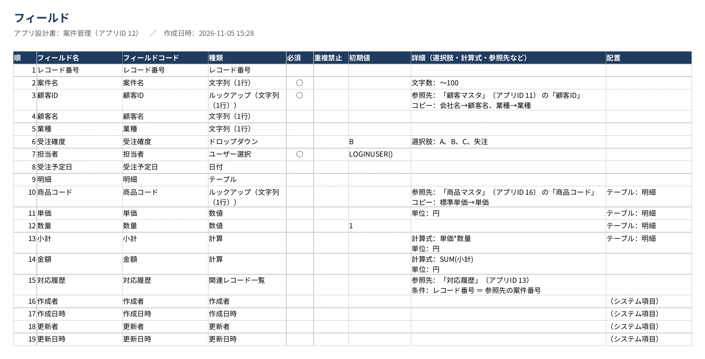
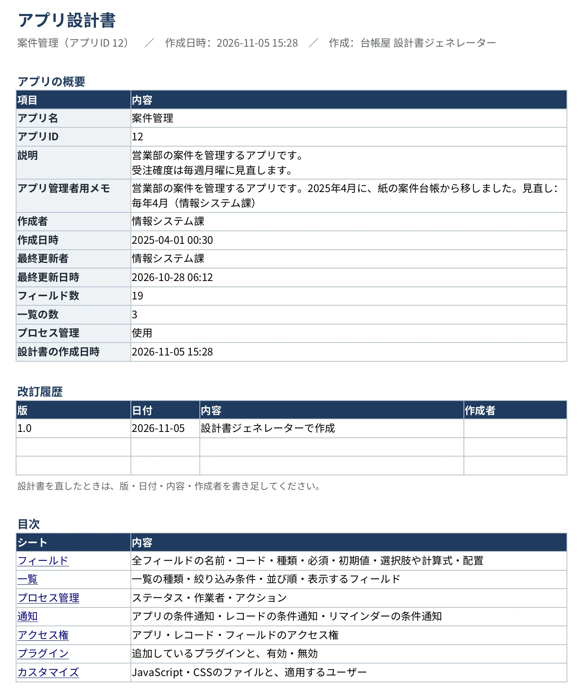
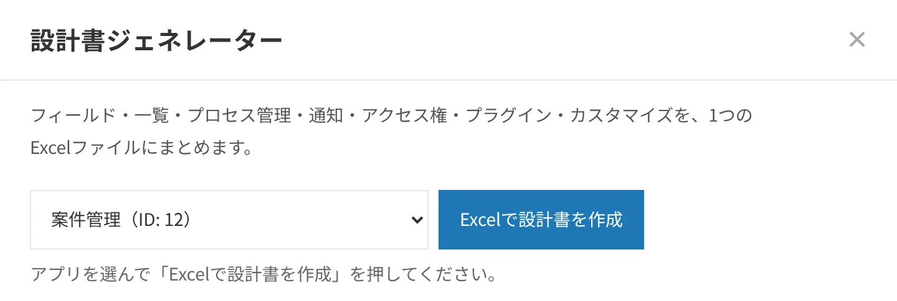

設計書ジェネレーター
無料アプリの設計書を、Excelで自動作成。
アプリの設定を読み取り、表紙を含む8シートのExcel設計書を作ります。引き継ぎや監査で設計資料が必要になったときに、設定画面を見ながら書き写す手間を省けます。
- ずっと無料・人数制限なし
- 保存：Excel
- データは外部に送信しません


こんなときに
- 担当者の交代で、アプリの設計資料を引き継ぎたい
- 監査や情報システム部門から、アプリの設計書を出すように言われた
- 設定画面を見ながら、設計書を手で書き写している
設計書の内容
1枚目は表紙（アプリの概要・改訂履歴・目次）です。各シートには見出しとアプリ名が入り、紺の見出し行で、A4で印刷すると幅が1ページに収まり、見出し行が毎ページに出ます（ページ番号つき）。
| シート | 記載される内容 |
|---|---|
| 概要（表紙） | アプリ名、ID、説明、アプリ管理者用メモ、作成者、更新日時、フィールド数、一覧の数。改訂履歴の欄と、各シートへのリンクの目次。2ページ目に、手で書き足す「運用の情報」（目的・利用する部署・担当者・見直しの時期）と、「関係するアプリ」（このアプリが参照している先） |
| フィールド | フォームの配置順に、種類・必須・重複禁止・初期値・選択肢・計算式・ルックアップの参照先・テーブルやグループ |
| 一覧 | 一覧ごとの絞り込み条件、並び順、表示するフィールド |
| プロセス管理 | ステータスと作業者、アクション（実行前・実行後・条件） |
| 通知 | アプリの条件通知、レコードの条件通知、リマインダー |
| アクセス権 | アプリ・レコード・フィールドのアクセス権 |
| プラグイン | 追加されているプラグインと、有効・無効の状態 |
| カスタマイズ | JavaScript・CSSのファイル名やURLと読み込む順番、適用するユーザーの範囲 |


読み取るのは運用中の設定です。設定画面で保存しただけで、まだ「アプリを更新」していない変更は含まれません。
使い方
- ボタンを押すアプリの一覧画面の上にある「設計書を作成」を押します。
- アプリを選ぶ設計書を作るアプリを選んで「Excelで設計書を作成」を押します。
- 保存される設計書_アプリ名_日付.xlsx が保存されます。直したときは、表紙の改訂履歴に書き足します。


導入方法
- 下の「ダウンロード」から、プラグインのファイル（zip）を保存します。zipは展開せず、そのまま使います。
- kintoneの歯車アイコンから「kintoneシステム管理」を開き、「プラグイン」の「読み込む」でファイルを読み込みます。
- どれか1つのアプリの「アプリの設定」→「プラグイン」で「台帳屋 設計書ジェネレーター」を追加し、「アプリを更新」を押します。
- 一覧画面の上に「設計書を作成」ボタンが出ます。1つのアプリに追加すれば、ほかのアプリの設計書も作れます。
動作環境
| 対応コース | スタンダードコース・ワイドコース |
|---|---|
| 導入する人 | kintoneシステム管理者 |
| 利用する人 | 設計書を作りたいアプリの管理権限を持つユーザー |
| 画面 | パソコン版の一覧画面（動作確認はGoogle Chrome） |
| 通信と書き込み | kintone環境とのみ通信し、設定やレコードは変更しません。Excelファイルはブラウザの中で作成します（導入前の確認事項） |
ダウンロード
ダウンロード（v1.2.3・zip・21KB）
ファイルの確認用（SHA-256）：4eb22b608b2663be643565f683696285693329bed40f961dd3f7e16f3b373d8d
ご利用の前に利用規約をお読みください。
困ったときは
- 「アプリの管理権限が必要です」と書かれたシートがある場合は、そのアプリの管理権限を持つユーザーが作成し直してください。
- JavaScriptやCSSによるカスタマイズは、読み込んでいるファイルの一覧だけを載せます。ファイルの中で何をしているかは、手で書き足してください。
- ゲストスペースのアプリには、現在対応していません。
- そのほかの不具合やご要望は、daichoya.plugins@gmail.com までお知らせください。
- 関連するガイド：kintoneアプリの設計書の作り方
更新履歴
1.2.3（2026年11月6日）：ボタンの文字の青を少し濃くして、読みやすくしました。機能の変更はありません。
以前の更新
- 1.2.2（2026年11月6日）：画面の下のご案内の料金を、年額（33,000円から）にしました。機能の変更はありません。
- 1.2.1（2026年11月6日）：画面の下のご案内を「全アプリをまとめて点検するなら、有料の棚卸し・変更監視パック（件数だけなら無料）」と、無料と有料が分かる言い方にしました。機能の変更はありません。
- 1.2.0（2026年11月6日）：表紙に「アプリ管理者用メモ」と、手で書き足す「運用の情報」（目的・利用する部署・担当者・見直しの時期）、「関係するアプリ」（ルックアップ・関連レコード一覧・アクションで参照している先）を足しました。各シートに見出しを付け、フィールドの参照先をアプリ名で書くようにしました。
- 1.1.0（2026年11月5日）：設計書の見た目を、提出しやすい形に整えました。表紙（概要・改訂履歴・目次）、紺の見出し行、見出し行の固定とフィルター、A4の印刷設定（幅に合わせる・見出し行を毎ページ・ページ番号）が付きます。
- 1.0.3（2026年11月5日）：画面の下のご案内を、この環境のアプリの数と、全アプリを無料で点検できる「棚卸し・変更監視パック」へのご案内に変えました。機能の変更はありません。
- 1.0.2（2026年11月5日）：権限がなく読み取れなかった項目を「0件」と表示していたのを、「読み取れませんでした」と表示するようにしました。
- 1.0.1（2026年11月5日）：画面の下に、有料版（棚卸し・変更監視パック）のご案内を1行加えました。機能の変更はありません。
- 1.0.0（2026年11月5日）：最初の公開版